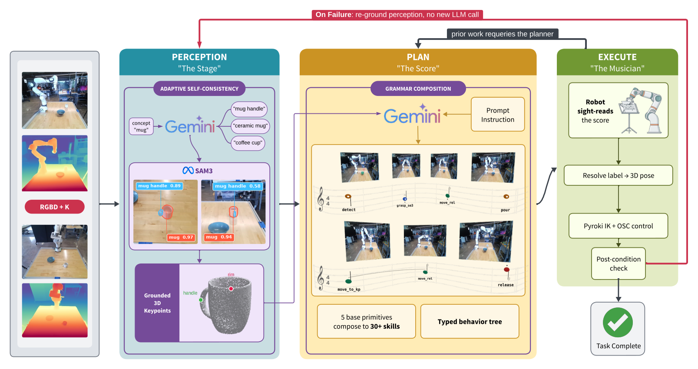
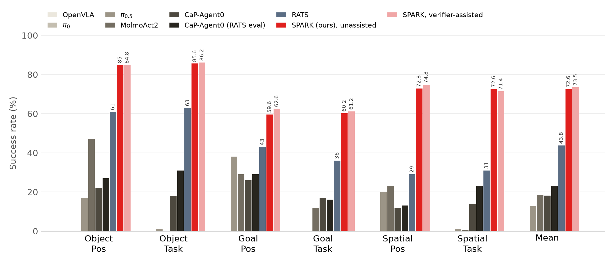
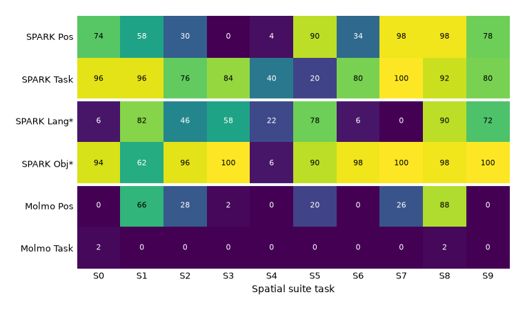
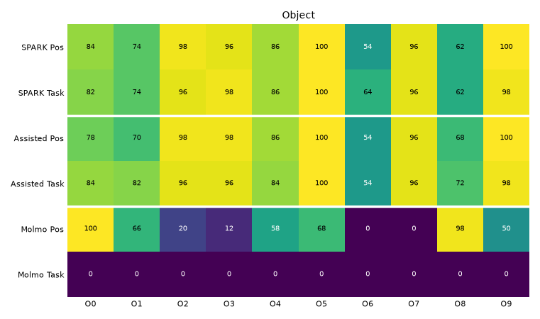
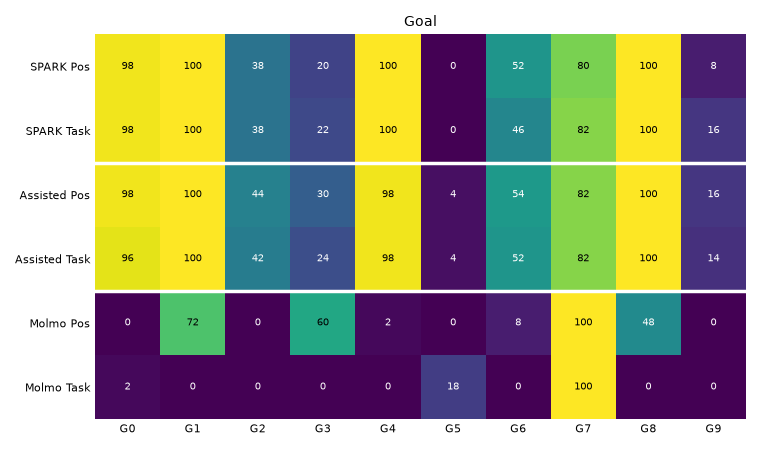
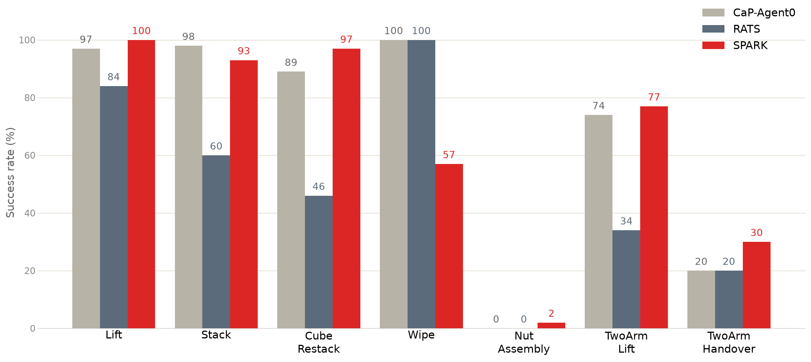

How to read the score: note position encodes the action category, duration its type, and dynamics the gripper force. Phrases play legato, waypoints blending without stops. Click any task to watch its rollout video.
Changes in a robot's observations do not automatically imply changes in the task it is solving, but language-conditioned manipulation systems often fail to separate the two. If an object moves, for example, the locations at which actions should be executed may change while the underlying manipulation plan remains valid. We introduce Sequential Planning via Anchored Robotic Keypoints (Spark), which separates a task's symbolic plan from its execution-time perceptual grounding, and we experimentally isolate whether a fixed symbolic plan can survive substantial changes to the scene through execution-time re-grounding. SPARK represents the task as a symbolic behavior tree whose object references are grounded to current 3D observations during execution, allowing the robot to update where actions are performed while preserving the plan. Runtime verification then enables local recovery and renewed grounding, only resorting to a new plan if necessary. To test the separation between plan and perceptual grounding, we perform a set of manipulation experiments with a fixed plan while moving objects during execution. Under a 10 cm displacement, verification and adaptation maintain 66.7% task success, compared with 2.2% when disabled, demonstrating the importance of the underlying principle. Without task-specific model training and with an open-weight planner, SPARK also achieves 66.8% mean success across six LIBERO-PRO settings and 68% across eleven physical task-embodiment settings on three robot platforms. Together, these results show that robustness does not require re-planning the task and for an important class of failures, it is sufficient to preserve the plan and update the system's perception of a changing world.

SAM3 grounds the scene from the platform cameras. One language-model call writes the whole plan as a typed behavior tree, the score, and the robot follows it without task-specific model training. The LIBERO-PRO results use the open-weight Qwen3.8-27B, served locally; the physical robots use Gemini. Each action refers to an object by label, which is resolved to a current 3D position when the action executes. A changed instruction may invalidate the task plan, while a moved object may instead invalidate only the perceptual grounding of an otherwise valid plan. “Put the bowl on the plate” calls for the same score whether the bowl starts on the left or the right. Only the pixels that the label bowl binds to have moved. SPARK revises the level of representation that the change actually invalidates: when the task structure remains valid, renewed perception and local execution are sufficient without solving the task again.
Each skill checks a post-condition. A failed check triggers a three-tier recovery procedure: an in-place correction, such as a small motion and grasp adjustment; perception re-grounding, which retracts the arm by 10 cm, re-runs SAM3, and retries the same plan using updated object locations; and plan regeneration through a new language-model call only after the execution attempt is exhausted. The first two tiers preserve the existing behavior tree and require no additional LLM call. Five base primitives (move_to_keypoint, move_relative, grasp, release, wait) cover basic motion operations, and more than thirty registered skills add calibrated closed-loop routines such as force-feedback descent, contact detection, and local retry logic. In simulation, an additional language-model call proposes three alternative prompts per object and SAM3 confidence selects the detection; in the matched ablation this raises spatial success by 27.7 points and object success by 10.0, but lowers goal-task success by 8.4. Physical experiments use single-prompt detection.
Success rates (%) over the six LIBERO-PRO position-and-task settings: three suites, two perturbation types per suite, ten tasks per setting, 50 trials per task. Pos changes initial object placements; Task changes instructions, targets, relations, or actions. The SPARK row uses the open-weight Qwen3.8-27B planner, reads no simulator success signal during the episode, locates and verifies drawers and the stove knob from the cameras alone, and uses no stored programs.
| Method | Object Pos | Object Task | Goal Pos | Goal Task | Spatial Pos | Spatial Task | Mean |
|---|---|---|---|---|---|---|---|
| OpenVLA | 0 | 0 | 0 | 0 | 0 | 0 | 0.0 |
| pi0 | 0 | 0 | 0 | 0 | 0 | 0 | 0.0 |
| pi0.5 | 17 | 1 | 38 | 0 | 20 | 1 | 12.8 |
| MolmoAct2 | 47.2 | 0.0 | 29.0 | 12.0 | 23.0 | 0.4 | 18.6 |
| CaP-Agent0 | 22 | 18 | 26 | 17 | 12 | 14 | 18.2 |
| CaP-Agent0 (RATS eval) | 27.0 | 31.0 | 29.0 | 16.0 | 13.0 | 23.0 | 23.2 |
| RATS | 61.0 | 63.0 | 43.0 | 36.0 | 29.0 | 31.0 | 43.8 |
| SPARK (ours) | 74.4 | 79.8 | 61.2 | 52.4 | 56.4 | 76.4 | 66.8 |
OpenVLA, pi0, pi0.5, and the original CaP-Agent0 rows are reproduced from the CaP-Agent0 paper; CaP-Agent0 (RATS eval) and RATS are from the RATS paper; MolmoAct2 is our evaluation of the released LIBERO checkpoint. SPARK: 10 tasks × 50 trials per setting.
SPARK reaches 66.8% mean success with no simulator signal read during the episode, 23.0 percentage points above RATS at 43.8%. On the language and object perturbations, which were not used during development, the mean is also 66.8% (object 92.2 and 78.4, goal 55.2 and 44.4, spatial 46.0 and 84.4).




Identical scripted plans run with verification and adaptation enabled or disabled together, on three object-suite tasks, three injection phases, and five initial states, for 45 trials at each displacement magnitude. The object slides over 40 simulator steps by 0 to 10 cm on the same seeded schedule for both conditions; the planner is not in the loop.
| Verification and adaptation | 0 cm | 2 cm | 5 cm | 10 cm |
|---|---|---|---|---|
| Enabled | 39/45 | 37/45 | 35/45 | 30/45 |
| Disabled | 33/45 | 26/45 | 7/45 | 1/45 |
At 10 cm, success is 30/45 (66.7%) with verification and adaptation, compared with 1/45 (2.2%) when both are disabled. The difference grows from six successful trials at 0 cm to twenty-nine at 10 cm. Because the plans are fixed, execution checks and recovery preserve success while retaining the same plan.
Per-task success (%). SPARK and CaP-Agent0 use 100 trials per task; RATS uses its 50-trial skill-transfer evaluation. SPARK averages 63.4% against 68.3% for CaP-Agent0's three-model ensemble, succeeding in 100% of Lift and CubeRestack trials and 97% of Stack trials, while success falls to 60% for Wipe, 63% for TwoArmLift, and 0% for NutAssemblySquare.

The same BT grammar, Gemini planning call, and SAM3 pipeline run on UR10e, Franka FR3, and a bimanual Franka setup, without task-specific model training. Nine tasks span three embodiments (eleven task-embodiment cells), 20 trials per cell, objects randomly placed and rotated per trial. All physical runs use hardware depth and single-description perception.
| Embodiment | Task | Success (%) |
|---|---|---|
| UR10e | Utensils in bowl | 55 |
| UR10e | Utensils in tray | 90 |
| UR10e | Plushie in bowl | 100 |
| UR10e | Stack blocks | 65 |
| FR3 | Utensils in tray | 80 |
| FR3 | Sponge-wash plate | 100 |
| FR3 | Mug pour | 65 |
| FR3 | Sweep to dustpan | 55 |
| FR3 | T-shirt fold | 50 |
| Bimanual | T-shirt fold | 30 |
| Bimanual | Silverware sort | 60 |
| Mean (11 cells) | 68 | |
SPARK succeeds in 150 of 220 trials (68.2%). The same utensils-in-tray task runs on two platforms: UR10e 18/20 (90%, Wilson 95% interval [70, 97]%) and FR3 16/20 (80%, [58, 92]%). On the bimanual platform, sleeve folding succeeds in 15/20 trials, while the complete three-fold sequence succeeds in 6/20.
The physical embodiments (UR10e, Franka FR3, Bimanual) and the simulated benchmarks run the same pipeline with objects and placements randomized per trial.
Click a rollout to open its score.
Mug pourFranka FR3
Sweep to dustpanFranka FR3, bird's-eye camera
T-shirt foldFranka FR3
Utensils in trayFranka FR3, bird's-eye camera
T-shirt foldBimanual Franka
Plushie in bowlUR10e
Utensils in trayUR10e
Gold block stackUR10e
Sponge washFranka FR3, repeat trial
T-shirt fold failure caseBimanual Franka, partial fold on blue shirt
T-shirt fold failure caseBimanual Franka, missed hem pinch
LiftCaP-Bench sim, 100% at 100 trials
StackCaP-Bench sim, 97% at 100 trials
Cube restackCaP-Bench sim, 100% at 100 trials
Two-arm liftCaP-Bench sim, 63% at 100 trials
WipeCaP-Bench sim, 60% at 100 trials
Nut assemblyCaP-Bench sim, 0% at 100 trials: threading needs pose control under contact that the OSC layer cannot hold
Two-arm handoverCaP-Bench sim, 24% at 100 trials
Cream cheese to basketLIBERO-PRO, object suite, pass
Milk to basketLIBERO-PRO, object suite, pass
Bowl next to ramekin onto plateLIBERO-PRO, spatial suite, pass
Bowl from table center onto plateLIBERO-PRO, spatial suite, pass
Cream cheese in bowlLIBERO-PRO, goal suite, pass
On hardware the same pipeline succeeds in 150 of 220 trials (68.2%) across eleven task-embodiment cells (nine tasks, twenty randomized trials each) over three robot platforms, without task-specific model training.
Bryce Grant is supported by an NSF Graduate Research Fellowship. This work was sponsored by an NVIDIA Academic Grant.
@misc{grant2026spark,
title = {Sequential Planning via Anchored Robotic Keypoints},
author = {Grant, Bryce and Rothenberg, Aryeh and Senning, Logan
and Chua, Zonghe and Patterson, Zach and Wang, Peng},
year = {2026}
}